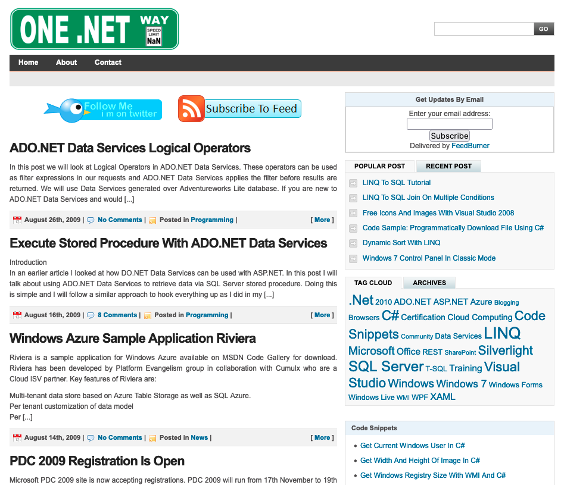

Few thoughts on Blogging

According to the History of Blogging, the first blog was created in 1994. The term weblog which eventually became blog was coined in 1997.
For me blogging started around 2003 when Wordpress was launched. This was also the time when I was heavily invested in Microsoft ecosystem. After spending many years working with ASP and VB, I found .NET to be a relief. During this time I also got involved with the local Microsoft community
I created a website which I don’t remember and wrote content which is not relevant or useful to either me or anyone else (I think). This went on for few years and I finally hosted my blog on my own domain called OneDotNetWay.com. I no longer own that domain. At that time, I thought that my site looked kinda cool. Yes, this is an opinion :)

Things were looking good and my blog was getting popular. The traffic was growing and other popular sites were linking to my content. It was nowhere near some of the top technical blogs of that time, but still I was enjoying the attention and benefits I was getting.
With that only-interesting-to-me history, it is time to reflect on the good and bad.
Good
Blogging as a anybody (programmer, investor, artist, cook, social worker) has many benefits. It has almost no barriers to entry but in it lies the power of Internet. One has access to limitless reach with a basic tool such as a laptop. There is a potential to form relations by expressing yourself through this medium.
I have experienced an upward trajectory in my career because of the content I produced. People have reached out to me because of a blog post I wrote which eventually resulted in a consulting gig.
Another big benefit is that writing is an excellent way to sharpen your skills. When you write something which other people will read, you tend to be a bit more careful about your words and the message you are delivering.
It has also helped me identify my weak areas and there are plenty. There have been times when my assumptions around what I know were knocked to the ground as soon as I started writing about it. This motivated me to go deep into a topic which increased my knowledge.
The blog also served as my own repository of knowledge which I could turn to in times of need.
Bad
I don’t see anything bad about blogging or having an online presence. The only negative I can see is that I abandoned a good thing.
What now?
I have been thinking of getting back into it for sometime and I have made some trial attempts. I have been collecting notes in Notion and I feel that I have started enjoying the process of writing once again.
One of the things I’m doing differently is that this blog has one and only purpose i.e. to serve me. If anyone else gets any benefit out of this, it is purely incidental.
Let’s see how it goes.
After all
It is not a race
Thanks for reading.
Namaste.
#1